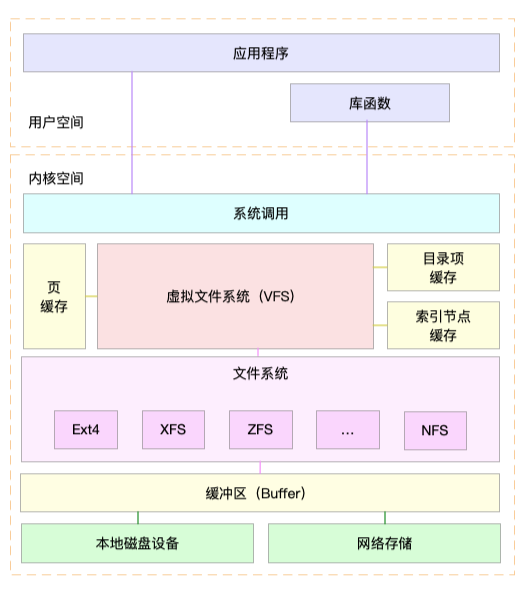

- 00 开篇词 别再让Linux性能问题成为你的绊脚石.md.html
- 01 如何学习Linux性能优化？.md.html
- 02 基础篇：到底应该怎么理解“平均负载”？.md.html
- 03 基础篇：经常说的 CPU 上下文切换是什么意思？（上）.md.html
- 04 基础篇：经常说的 CPU 上下文切换是什么意思？（下）.md.html
- 05 基础篇：某个应用的CPU使用率居然达到100%，我该怎么办？.md.html
- 06 案例篇：系统的 CPU 使用率很高，但为啥却找不到高 CPU 的应用？.md.html
- 07 案例篇：系统中出现大量不可中断进程和僵尸进程怎么办？（上）.md.html
- 08 案例篇：系统中出现大量不可中断进程和僵尸进程怎么办？（下）.md.html
- 09 基础篇：怎么理解Linux软中断？.md.html
- 10 案例篇：系统的软中断CPU使用率升高，我该怎么办？.md.html
- 11 套路篇：如何迅速分析出系统CPU的瓶颈在哪里？.md.html
- 12 套路篇：CPU 性能优化的几个思路.md.html
- 13 答疑（一）：无法模拟出 RES 中断的问题，怎么办？.md.html
- 14 答疑（二）：如何用perf工具分析Java程序？.md.html
- 15 基础篇：Linux内存是怎么工作的？.md.html
- 16 基础篇：怎么理解内存中的Buffer和Cache？.md.html
- 17 案例篇：如何利用系统缓存优化程序的运行效率？.md.html
- 18 案例篇：内存泄漏了，我该如何定位和处理？.md.html
- 19 案例篇：为什么系统的Swap变高了（上）.md.html
- 20 案例篇：为什么系统的Swap变高了？（下）.md.html
- 21 套路篇：如何“快准狠”找到系统内存的问题？.md.html
- 22 答疑（三）：文件系统与磁盘的区别是什么？.md.html
- 23 基础篇：Linux 文件系统是怎么工作的？.md.html
- 24 基础篇：Linux 磁盘I_O是怎么工作的（上）.md.html
- 25 基础篇：Linux 磁盘I_O是怎么工作的（下）.md.html
- 26 案例篇：如何找出狂打日志的“内鬼”？.md.html
- 27 案例篇：为什么我的磁盘I_O延迟很高？.md.html
- 28 案例篇：一个SQL查询要15秒，这是怎么回事？.md.html
- 29 案例篇：Redis响应严重延迟，如何解决？.md.html
- 30 套路篇：如何迅速分析出系统I_O的瓶颈在哪里？.md.html
- 31 套路篇：磁盘 I_O 性能优化的几个思路.md.html
- 32 答疑（四）：阻塞、非阻塞 I_O 与同步、异步 I_O 的区别和联系.md.html
- 33 关于 Linux 网络，你必须知道这些（上）.md.html
- 34 关于 Linux 网络，你必须知道这些（下）.md.html
- 35 基础篇：C10K 和 C1000K 回顾.md.html
- 36 套路篇：怎么评估系统的网络性能？.md.html
- 37 案例篇：DNS 解析时快时慢，我该怎么办？.md.html
- 38 案例篇：怎么使用 tcpdump 和 Wireshark 分析网络流量？.md.html
- 39 案例篇：怎么缓解 DDoS 攻击带来的性能下降问题？.md.html
- 40 案例篇：网络请求延迟变大了，我该怎么办？.md.html
- 41 案例篇：如何优化 NAT 性能？（上）.md.html
- 42 案例篇：如何优化 NAT 性能？（下）.md.html
- 43 套路篇：网络性能优化的几个思路（上）.md.html
- 44 套路篇：网络性能优化的几个思路（下）.md.html
- 45 答疑（五）：网络收发过程中，缓冲区位置在哪里？.md.html
- 46 案例篇：为什么应用容器化后，启动慢了很多？.md.html
- 47 案例篇：服务器总是时不时丢包，我该怎么办？（上）.md.html
- 48 案例篇：服务器总是时不时丢包，我该怎么办？（下）.md.html
- 49 案例篇：内核线程 CPU 利用率太高，我该怎么办？.md.html
- 50 案例篇：动态追踪怎么用？（上）.md.html
- 51 案例篇：动态追踪怎么用？（下）.md.html
- 52 案例篇：服务吞吐量下降很厉害，怎么分析？.md.html
- 53 套路篇：系统监控的综合思路.md.html
- 54 套路篇：应用监控的一般思路.md.html
- 55 套路篇：分析性能问题的一般步骤.md.html
- 56 套路篇：优化性能问题的一般方法.md.html
- 57 套路篇：Linux 性能工具速查.md.html
- 58 答疑（六）：容器冷启动如何性能分析？.md.html
- 加餐（一） 书单推荐：性能优化和Linux 系统原理.md.html
- 加餐（二） 书单推荐：网络原理和 Linux 内核实现.md.html
- 用户故事 “半路出家 ”，也要顺利拿下性能优化！.md.html
- 用户故事 运维和开发工程师们怎么说？.md.html
- 结束语 愿你攻克性能难关.md.html
- 捐赠
31 套路篇：磁盘 I_O 性能优化的几个思路
你好，我是倪朋飞。
上一节，我们一起回顾了常见的文件系统和磁盘 I/O 性能指标，梳理了核心的 I/O 性能观测工具，最后还总结了快速分析 I/O 性能问题的思路。
虽然 I/O 的性能指标很多，相应的性能分析工具也有好几个，但理解了各种指标的含义后，你就会发现它们其实都有一定的关联。
顺着这些关系往下理解，你就会发现，掌握这些常用的瓶颈分析思路，其实并不难。
找出了 I/O 的性能瓶颈后，下一步要做的就是优化了，也就是如何以最快的速度完成 I/O操作，或者换个思路，减少甚至避免磁盘的 I/O 操作。
今天，我就来说说，优化 I/O 性能问题的思路和注意事项。
I/O 基准测试
按照我的习惯，优化之前，我会先问自己， I/O 性能优化的目标是什么？换句话说，我们观察的这些I/O 性能指标（比如 IOPS、吞吐量、延迟等），要达到多少才合适呢？
事实上，I/O 性能指标的具体标准，每个人估计会有不同的答案，因为我们每个人的应用场景、使用的文件系统和物理磁盘等，都有可能不一样。
为了更客观合理地评估优化效果，我们首先应该对磁盘和文件系统进行基准测试，得到文件系统或者磁盘 I/O 的极限性能。
fio（Flexible I/O Tester）正是最常用的文件系统和磁盘 I/O 性能基准测试工具。它提供了大量的可定制化选项，可以用来测试，裸盘或者文件系统在各种场景下的 I/O 性能，包括了不同块大小、不同 I/O 引擎以及是否使用缓存等场景。
fio 的安装比较简单，你可以执行下面的命令来安装它：
# Ubuntu
apt-get install -y fio
# CentOS
yum install -y fio
安装完成后，就可以执行 man fio 查询它的使用方法。
fio 的选项非常多， 我会通过几个常见场景的测试方法，介绍一些最常用的选项。这些常见场景包括随机读、随机写、顺序读以及顺序写等，你可以执行下面这些命令来测试：
# 随机读
fio -name=randread -direct=1 -iodepth=64 -rw=randread -ioengine=libaio -bs=4k -size=1G -numjobs=1 -runtime=1000 -group_reporting -filename=/dev/sdb
# 随机写
fio -name=randwrite -direct=1 -iodepth=64 -rw=randwrite -ioengine=libaio -bs=4k -size=1G -numjobs=1 -runtime=1000 -group_reporting -filename=/dev/sdb
# 顺序读
fio -name=read -direct=1 -iodepth=64 -rw=read -ioengine=libaio -bs=4k -size=1G -numjobs=1 -runtime=1000 -group_reporting -filename=/dev/sdb
# 顺序写
fio -name=write -direct=1 -iodepth=64 -rw=write -ioengine=libaio -bs=4k -size=1G -numjobs=1 -runtime=1000 -group_reporting -filename=/dev/sdb
在这其中，有几个参数需要你重点关注一下。
direct，表示是否跳过系统缓存。上面示例中，我设置的 1 ，就表示跳过系统缓存。
iodepth，表示使用异步 I/O（asynchronous I/O，简称AIO）时，同时发出的 I/O 请求上限。在上面的示例中，我设置的是 64。
rw，表示 I/O 模式。我的示例中， read/write 分别表示顺序读/写，而 randread/randwrite 则分别表示随机读/写。
ioengine，表示 I/O 引擎，它支持同步（sync）、异步（libaio）、内存映射（mmap）、网络（net）等各种 I/O 引擎。上面示例中，我设置的 libaio 表示使用异步 I/O。
bs，表示 I/O 的大小。示例中，我设置成了 4K（这也是默认值）。
filename，表示文件路径，当然，它可以是磁盘路径（测试磁盘性能），也可以是文件路径（测试文件系统性能）。示例中，我把它设置成了磁盘 /dev/sdb。不过注意，用磁盘路径测试写，会破坏这个磁盘中的文件系统，所以在使用前，你一定要事先做好数据备份。
下面就是我使用 fio 测试顺序读的一个报告示例。
read: (g=0): rw=read, bs=(R) 4096B-4096B, (W) 4096B-4096B, (T) 4096B-4096B, ioengine=libaio, iodepth=64
fio-3.1
Starting 1 process
Jobs: 1 (f=1): [R(1)][100.0%][r=16.7MiB/s,w=0KiB/s][r=4280,w=0 IOPS][eta 00m:00s]
read: (groupid=0, jobs=1): err= 0: pid=17966: Sun Dec 30 08:31:48 2018
read: IOPS=4257, BW=16.6MiB/s (17.4MB/s)(1024MiB/61568msec)
slat (usec): min=2, max=2566, avg= 4.29, stdev=21.76
clat (usec): min=228, max=407360, avg=15024.30, stdev=20524.39
lat (usec): min=243, max=407363, avg=15029.12, stdev=20524.26
clat percentiles (usec):
| 1.00th=[ 498], 5.00th=[ 1020], 10.00th=[ 1319], 20.00th=[ 1713],
| 30.00th=[ 1991], 40.00th=[ 2212], 50.00th=[ 2540], 60.00th=[ 2933],
| 70.00th=[ 5407], 80.00th=[ 44303], 90.00th=[ 45351], 95.00th=[ 45876],
| 99.00th=[ 46924], 99.50th=[ 46924], 99.90th=[ 48497], 99.95th=[ 49021],
| 99.99th=[404751]
bw ( KiB/s): min= 8208, max=18832, per=99.85%, avg=17005.35, stdev=998.94, samples=123
iops : min= 2052, max= 4708, avg=4251.30, stdev=249.74, samples=123
lat (usec) : 250=0.01%, 500=1.03%, 750=1.69%, 1000=2.07%
lat (msec) : 2=25.64%, 4=37.58%, 10=2.08%, 20=0.02%, 50=29.86%
lat (msec) : 100=0.01%, 500=0.02%
cpu : usr=1.02%, sys=2.97%, ctx=33312, majf=0, minf=75
IO depths : 1=0.1%, 2=0.1%, 4=0.1%, 8=0.1%, 16=0.1%, 32=0.1%, >=64=100.0%
submit : 0=0.0%, 4=100.0%, 8=0.0%, 16=0.0%, 32=0.0%, 64=0.0%, >=64=0.0%
complete : 0=0.0%, 4=100.0%, 8=0.0%, 16=0.0%, 32=0.0%, 64=0.1%, >=64=0.0%
issued rwt: total=262144,0,0, short=0,0,0, dropped=0,0,0
latency : target=0, window=0, percentile=100.00%, depth=64
Run status group 0 (all jobs):
READ: bw=16.6MiB/s (17.4MB/s), 16.6MiB/s-16.6MiB/s (17.4MB/s-17.4MB/s), io=1024MiB (1074MB), run=61568-61568msec
Disk stats (read/write):
sdb: ios=261897/0, merge=0/0, ticks=3912108/0, in_queue=3474336, util=90.09%
这个报告中，需要我们重点关注的是， slat、clat、lat ，以及 bw 和 iops 这几行。
先来看刚刚提到的前三个参数。事实上，slat、clat、lat 都是指 I/O 延迟（latency）。不同之处在于：
slat ，是指从 I/O 提交到实际执行 I/O 的时长（Submission latency）；
clat ，是指从 I/O 提交到 I/O 完成的时长（Completion latency）；
而 lat ，指的是从fio 创建 I/O 到 I/O 完成的总时长。
这里需要注意的是，对同步 I/O 来说，由于 I/O 提交和I/O完成是一个动作，所以 slat 实际上就是 I/O 完成的时间，而 clat 是 0。而从示例可以看到，使用异步 I/O（libaio）时，lat 近似等于 slat + clat之和。
再来看bw ，它代表吞吐量。在我上面的示例中，你可以看到，平均吞吐量大约是 16 MB（17005 KiB/1024）。
最后的iops ，其实就是每秒 I/O 的次数，上面示例中的平均 IOPS 为 4250。
通常情况下，应用程序的 I/O 都是读写并行的，而且每次的I/O大小也不一定相同。所以，刚刚说的这几种场景，并不能精确模拟应用程序的 I/O 模式。那怎么才能精确模拟应用程序的 I/O 模式呢？
幸运的是，fio 支持 I/O 的重放。借助前面提到过的 blktrace，再配合上 fio，就可以实现对应用程序 I/O 模式的基准测试。你需要先用 blktrace ，记录磁盘设备的 I/O 访问情况；然后使用 fio ，重放 blktrace 的记录。
比如你可以运行下面的命令来操作：
# 使用blktrace跟踪磁盘I/O，注意指定应用程序正在操作的磁盘
$ blktrace /dev/sdb
# 查看blktrace记录的结果
# ls
sdb.blktrace.0 sdb.blktrace.1
# 将结果转化为二进制文件
$ blkparse sdb -d sdb.bin
# 使用fio重放日志
$ fio --name=replay --filename=/dev/sdb --direct=1 --read_iolog=sdb.bin
这样，我们就通过 blktrace+fio 的组合使用，得到了应用程序 I/O 模式的基准测试报告。
I/O 性能优化
得到 I/O 基准测试报告后，再用上我们上一节总结的性能分析套路，找出 I/O 的性能瓶颈并优化，就是水到渠成的事情了。当然， 想要优化I/O 性能，肯定离不开 Linux 系统的 I/O 栈图的思路辅助。你可以结合下面的 I/O 栈图再回顾一下。

下面，我就带你从应用程序、文件系统以及磁盘角度，分别看看 I/O 性能优化的基本思路。
应用程序优化
首先，我们来看一下，从应用程序的角度有哪些优化 I/O 的思路。
应用程序处于整个 I/O 栈的最上端，它可以通过系统调用，来调整 I/O 模式（如顺序还是随机、同步还是异步）， 同时，它也是 I/O 数据的最终来源。在我看来，可以有这么几种方式来优化应用程序的 I/O 性能。
第一，可以用追加写代替随机写，减少寻址开销，加快 I/O 写的速度。
第二，可以借助缓存 I/O ，充分利用系统缓存，降低实际 I/O 的次数。
第三，可以在应用程序内部构建自己的缓存，或者用 Redis 这类外部缓存系统。这样，一方面，能在应用程序内部，控制缓存的数据和生命周期；另一方面，也能降低其他应用程序使用缓存对自身的影响。
比如，在前面的 MySQL 案例中，我们已经见识过，只是因为一个干扰应用清理了系统缓存，就会导致 MySQL 查询有数百倍的性能差距（0.1s vs 15s）。
再如， C 标准库提供的 fopen、fread 等库函数，都会利用标准库的缓存，减少磁盘的操作。而你直接使用 open、read 等系统调用时，就只能利用操作系统提供的页缓存和缓冲区等，而没有库函数的缓存可用。
第四，在需要频繁读写同一块磁盘空间时，可以用 mmap 代替 read/write，减少内存的拷贝次数。
第五，在需要同步写的场景中，尽量将写请求合并，而不是让每个请求都同步写入磁盘，即可以用 fsync() 取代 O_SYNC。
第六，在多个应用程序共享相同磁盘时，为了保证 I/O 不被某个应用完全占用，推荐你使用 cgroups 的 I/O 子系统，来限制进程 / 进程组的 IOPS 以及吞吐量。
最后，在使用 CFQ 调度器时，可以用 ionice 来调整进程的 I/O 调度优先级，特别是提高核心应用的 I/O 优先级。ionice 支持三个优先级类：Idle、Best-effort 和 Realtime。其中， Best-effort 和 Realtime 还分别支持 0-7 的级别，数值越小，则表示优先级别越高。
文件系统优化
应用程序访问普通文件时，实际是由文件系统间接负责，文件在磁盘中的读写。所以，跟文件系统中相关的也有很多优化 I/O 性能的方式。
第一，你可以根据实际负载场景的不同，选择最适合的文件系统。比如Ubuntu 默认使用 ext4 文件系统，而 CentOS 7 默认使用 xfs 文件系统。
相比于 ext4 ，xfs 支持更大的磁盘分区和更大的文件数量，如 xfs 支持大于16TB 的磁盘。但是 xfs 文件系统的缺点在于无法收缩，而 ext4 则可以。
第二，在选好文件系统后，还可以进一步优化文件系统的配置选项，包括文件系统的特性（如ext_attr、dir_index）、日志模式（如journal、ordered、writeback）、挂载选项（如noatime）等等。
比如， 使用tune2fs 这个工具，可以调整文件系统的特性（tune2fs 也常用来查看文件系统超级块的内容）。 而通过 /etc/fstab ，或者 mount 命令行参数，我们可以调整文件系统的日志模式和挂载选项等。
第三，可以优化文件系统的缓存。
比如，你可以优化 pdflush 脏页的刷新频率（比如设置 dirty_expire_centisecs 和 dirty_writeback_centisecs）以及脏页的限额（比如调整 dirty_background_ratio 和 dirty_ratio等）。
再如，你还可以优化内核回收目录项缓存和索引节点缓存的倾向，即调整 vfs_cache_pressure（/proc/sys/vm/vfs_cache_pressure，默认值100），数值越大，就表示越容易回收。
最后，在不需要持久化时，你还可以用内存文件系统 tmpfs，以获得更好的 I/O性能 。tmpfs 把数据直接保存在内存中，而不是磁盘中。比如 /dev/shm/ ，就是大多数 Linux 默认配置的一个内存文件系统，它的大小默认为总内存的一半。
磁盘优化
数据的持久化存储，最终还是要落到具体的物理磁盘中，同时，磁盘也是整个 I/O 栈的最底层。从磁盘角度出发，自然也有很多有效的性能优化方法。
第一，最简单有效的优化方法，就是换用性能更好的磁盘，比如用 SSD 替代 HDD。
第二，我们可以使用 RAID ，把多块磁盘组合成一个逻辑磁盘，构成冗余独立磁盘阵列。这样做既可以提高数据的可靠性，又可以提升数据的访问性能。
第三，针对磁盘和应用程序 I/O 模式的特征，我们可以选择最适合的 I/O 调度算法。比方说，SSD 和虚拟机中的磁盘，通常用的是 noop 调度算法。而数据库应用，我更推荐使用 deadline 算法。
第四，我们可以对应用程序的数据，进行磁盘级别的隔离。比如，我们可以为日志、数据库等 I/O 压力比较重的应用，配置单独的磁盘。
第五，在顺序读比较多的场景中，我们可以增大磁盘的预读数据，比如，你可以通过下面两种方法，调整 /dev/sdb 的预读大小。
调整内核选项 /sys/block/sdb/queue/read_ahead_kb，默认大小是 128 KB，单位为KB。
使用 blockdev 工具设置，比如 blockdev –setra 8192 /dev/sdb，注意这里的单位是 512B（0.5KB），所以它的数值总是 read_ahead_kb 的两倍。
第六，我们可以优化内核块设备 I/O 的选项。比如，可以调整磁盘队列的长度 /sys/block/sdb/queue/nr_requests，适当增大队列长度，可以提升磁盘的吞吐量（当然也会导致 I/O 延迟增大）。
最后，要注意，磁盘本身出现硬件错误，也会导致 I/O 性能急剧下降，所以发现磁盘性能急剧下降时，你还需要确认，磁盘本身是不是出现了硬件错误。
比如，你可以查看 dmesg 中是否有硬件 I/O 故障的日志。 还可以使用 badblocks、smartctl等工具，检测磁盘的硬件问题，或用 e2fsck 等来检测文件系统的错误。如果发现问题，你可以使用 fsck 等工具来修复。
小结
今天，我们一起梳理了常见的文件系统和磁盘 I/O 的性能优化思路和方法。发现 I/O 性能问题后，不要急于动手优化，而要先找出最重要的、可以最大程度提升性能的问题，然后再从 I/O 栈的不同层入手，考虑具体的优化方法。
记住，磁盘和文件系统的 I/O ，通常是整个系统中最慢的一个模块。所以，在优化 I/O 问题时，除了可以优化 I/O 的执行流程，还可以借助更快的内存、网络、CPU 等，减少I/O 调用。
比如，你可以充分利用系统提供的 Buffer、Cache ，或是应用程序内部缓存， 再或者Redis 这类的外部缓存系统。
思考
在整个板块的学习中，我只列举了最常见的几个 I/O 性能优化思路。除此之外，还有很多从应用程序、系统再到磁盘硬件的优化方法。我想请你一起来聊聊，你还知道哪些其他优化方法吗？
欢迎在留言区跟我讨论，也欢迎你把这篇文章分享给你的同事、朋友。我们一起在实战中演练，在交流中进步。
© 2019 - 2023 Liangliang Lee. Powered by gin and hexo-theme-book.